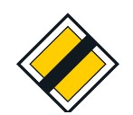
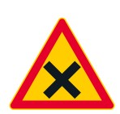
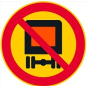
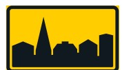

Liikennemerkkipeli
Yhdistä liikennemerkki ja selite vetämällä selite liikennemerkin päälle
Oikeasta vastauksesta saat 2 pistettä, väärästä vastauksesta 0 pistettä
Vaarallisten aineiden kuljettaminen kielletty
Keskusta
Etuajo-oikeuden päättyminen
Taajama
Tienristeys



